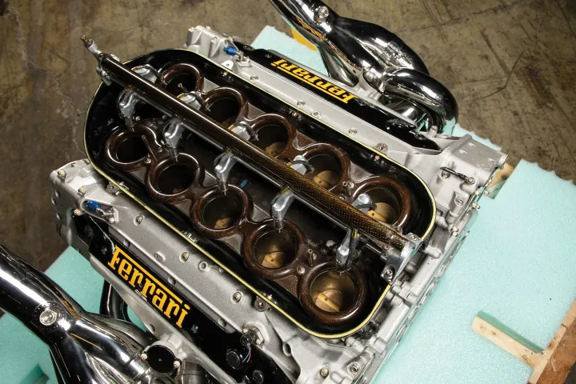
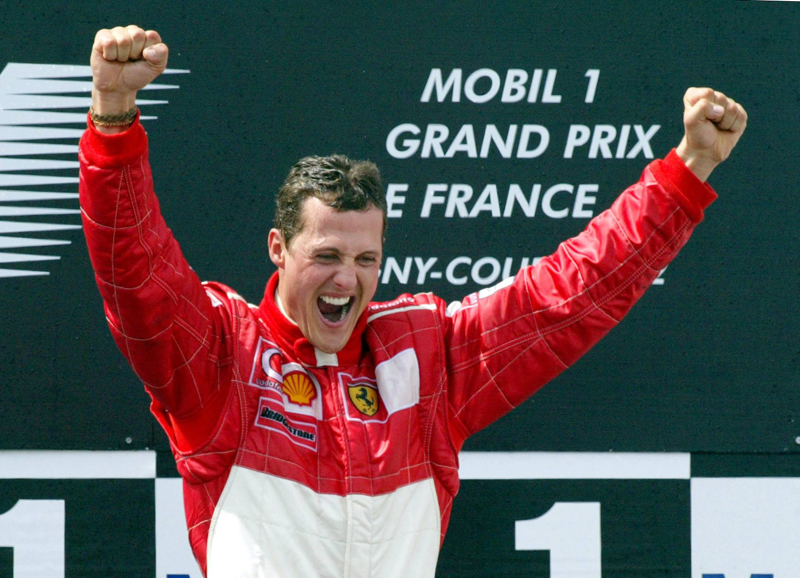
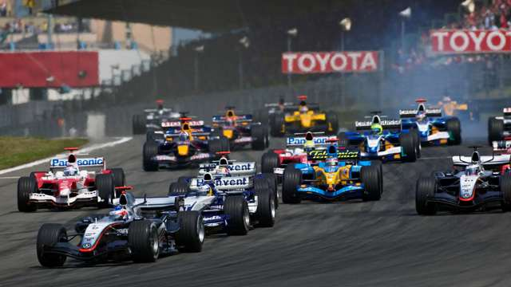
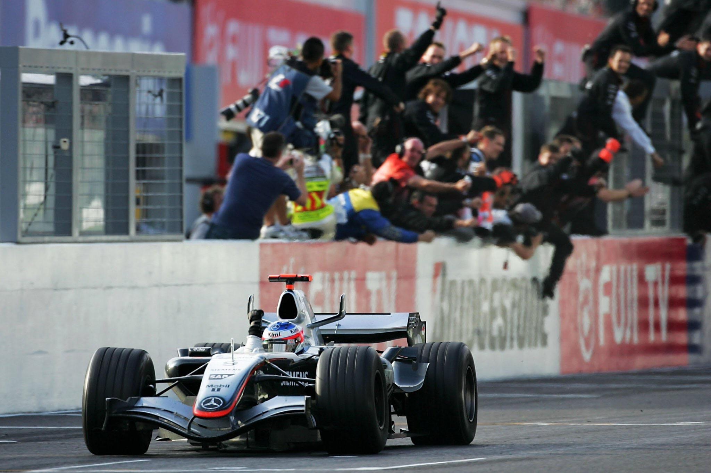

V10 Engine Explained
The V10 engine had 10 cylinders arranged in a V shape. These engines were capable of reaching 20,000 RPMs and sounds producing 140 decibels. These engines were naturally aspirated, meaning they did not use turbochargers.

Michael Schumacher and Ferrari
During the early 2000s, Michael Schumacher and Ferrari dominated Formula 1. Together, they won five world championships, both drivers and constructors (teams). The iconic red and white was a sight on many podiums during those years.

Memorable Race
The 2000 Japanese Grand Prix was a significant moment in F1 history. There, Schumacher won the race and secured his first championship with Ferrari, ending a long championship drought of 21 years for the team.

Fun Fact
Many fans idolize this period as the best sounding cars in Formula 1 History.